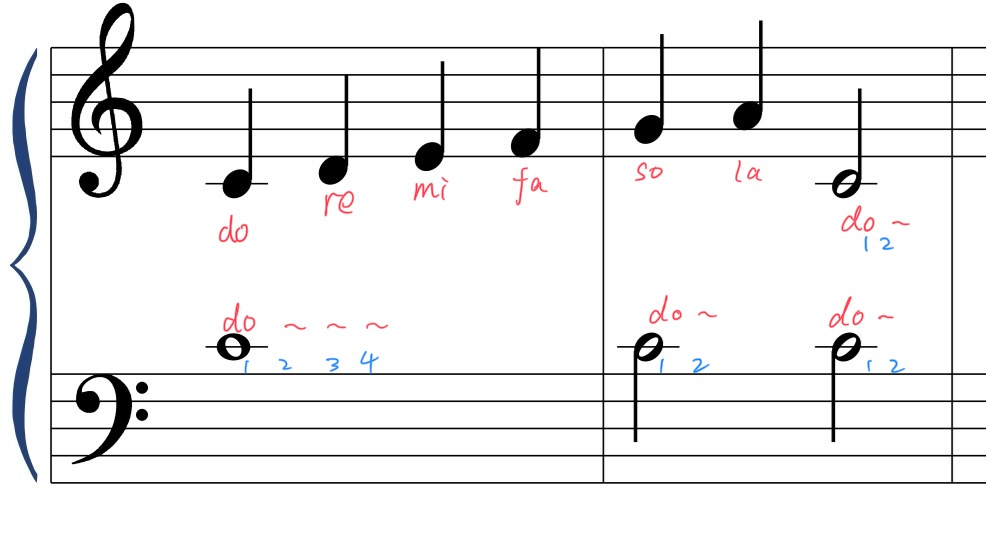
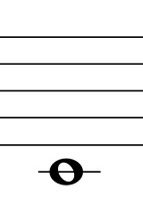
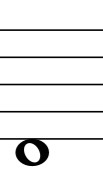
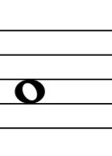
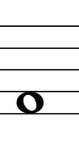
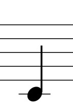
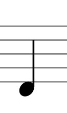
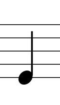
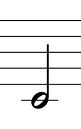

Part 2-记住do re mi fa so
认真看下图👀，认真看20s

完成下面的3道小测试，点击图片看看你选的是不是正确答案吧～
1 哪个是 全音符 fa？(下图音符都在高音谱号🎼中)
1️⃣
2️⃣
3️⃣
4️⃣
2 哪个是 四分音符 mi？(下图音符都在高音谱号🎼中)
1️⃣
2️⃣
3️⃣
4️⃣
3 哪个是 2分音符 do？(下图音符都在高音谱号🎼中)
1️⃣
2️⃣
3️⃣
4️⃣
Congratulations! 完成✅